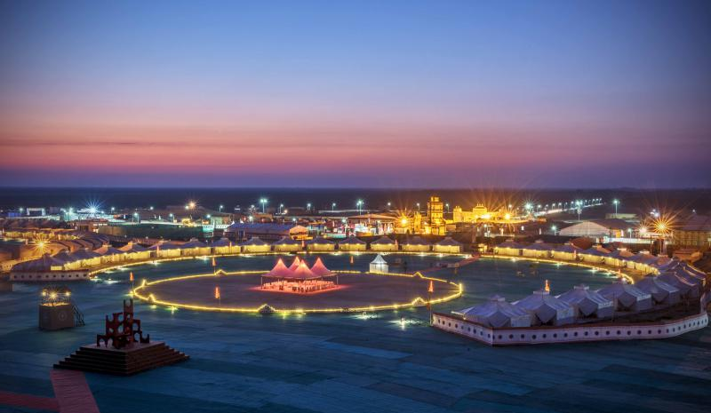

Mongolia with Gobi Desert & Nadaam Festival
- Ulaanbaatar,Ulaanbaatar – Dalanzadgad – Gobi Desert (1 Night)
- Dalanzadgad (1 Night),Evening enjoy traditional Tumen-Ekh Folk Song and Dance Ensembl
- Witness the opening ceremony of Naadam festival
- Khuu Doloon Khudag – Ulaanbatar
- 7Days/6Nights
- Jumbo Disc From Rs.22,500/-
|
French Riviera
- Nice – Cannes – Nice (2 Nights)(1 Night)
- Nice – Eze – Monte Carlo – Menton – Nice
- Nice – Saint-Jean-Cap-Ferrat – St. Tropez – Toulon (1 Night)
- Toulon – Marseille (2 Nights)
- 9Days/8Nights
- Jumbo Disc From Rs.32,500/-
|
 La Tomatina Festival - Spain
La Tomatina Festival - Spain
- Madrid (1 Night)(1 Night)
- Madrid – Toledo – Seville (2 Nights)
- Seville
- Seville – Costa Del Sol – Malaga (1 Night)
- 7Days/6Nights
- Jumbo Disc From Rs.40,000/-
|

Rann Utsav, Gujarat
- Witness the grandeur of sunset at Rann of Kutch
- Enjoy cultural activities at Tent City (Dhordo)
- 5Days/4Nights
- Jumbo Disc From Rs.20,500/-
|